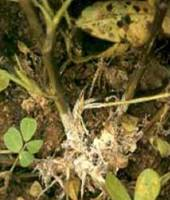

GROUNDNUT :: MINOR DISEASE :: STEM ROT
Stem rot - Sclerotium rolfsii
Symptoms
The first symptom is the sudden drying of a branch which is completely or partially in contact with the soil. The leaves turn brown and dry but remain attached to the plant. Near soil on stems white growth of fungus mycelium is appeared. As the disease advances white mycelium web spreads over the soil and the basal canopy of the plant. The sclerotia, the size and colour of mustard seeds, appear on the infected areas as the disease develops and spreads. The entire plant may be killed or only two or three branches may be affected. Lesions on the developing pegs can retard pod development. Infected pods are usually rotted.
|  |
Symptoms |
- Cultural practices such as deep' covering or burial of organic matter before planting, non-dirting cultivation by avoiding movement of soil up around the base of plants and preventing accumulation of organic debris are extremely useful in reducing the disease.
- Crop rotation with wheat, corn and soyabean may minimize the incidence of stem rot.
- Seed treatment with Carbendazim / Thiram / Captan @ 2-3 g/kg seed.
- Seed treatment with Trichoderma viride formulation (4g/kg) followed by application of 2.5kg Trichoderma viride formulation mixed with 50kg farm yard manure before sowing.